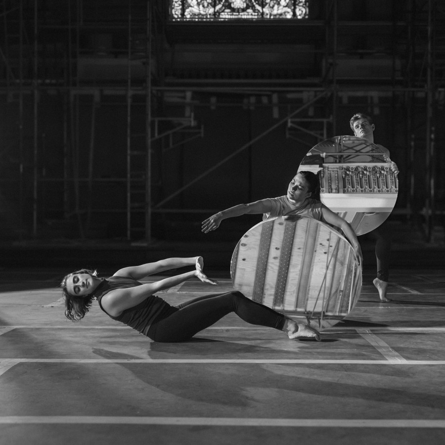

Brendan Fernandes: In the Round
The Driehaus Museum is proud to present Brendan Fernandes: In the Round as the next iteration of our A Tale of Today series that places contemporary art in dialogue with the art, architecture, and design of the Museum. The Museum’s first artist-in-residence, Fernandes will transform the Museum’s 1926 Murphy Auditorium into a dynamic site for sculptural installation, movement, sound, and dance. Conceived as an evolving, episodic residency, In the Round will unfold throughout 2026 with performance dates and public programs announced at intervals across the year. Organized by guest curator Stephanie Cristello, Brendan Fernandes: In the Round takes place at the Driehaus Museum, 50 E. Erie Street, from April 9 to November 14, 2026.
Inspired by the pioneering spirit of New York City’s Judson Dance Theater and their Concerts for Dance, Fernandes will create and present a program of newly commissioned performances called Scores for the Murphy Auditorium. Dancers will interact with minimalist site-specific installations developed in collaboration with AIM Architecture (Antwerp, Shanghai, Chicago) and textile-based works by the Fabric Workshop and Museum (Philadelphia), echoing the multidisciplinary ethos of Judson Dance Theater. Fernandes will invite Chicago’s independent dance community for additional performance activations throughout his residency.
Executive Director of the Driehaus Museum Lisa M. Key says, “A Tale of Today reflects a main tenet of the Driehaus Museum mission: sparking dialogue between contemporary art and ideas, and the art, architecture, and design of Chicago’s Gilded Age. We are delighted to welcome Brendan Fernandes to be the Museum’s first artist-in-residence, where history and the present come full circle.”
“In the Round invites us to experience contemporary art and dance as a shared architectural and social space—one shaped by bodies moving together through history,” says Guest Curator Stephanie Cristello. “Reactivating the radical spirit of the Judson Dance Theater within the Murphy Auditorium, Brendan Fernandes asks us to see history itself as something lived, collective, and continually re-made.”
The Judson Dance Theater was an influential collective of choreographers, composers, filmmakers, and artists in 1960s New York who revolutionized dance by rejecting classical technique in favor of everyday gesture and shared experimentation. Initially staged in the sanctuary of Judson Memorial Church between 1962 and 1966, the group’s early performances offered a radical blueprint for creative freedom. Decades later, Fernandes reimagines this legacy for the present, re-situating its spirit in the Driehaus Museum’s 1926 Murphy Auditorium, which was modeled after a church in Paris.
Brendan Fernandes: In the Round collapses past and present, revealing a shared lineage of artists transforming unconventional spaces into places of expression, experimentation, and community.
Designed in partnership with AIM Architecture, Fernandes transforms the Murphy Auditorium with a site-specific, circular platform and mirror-finish benches that echo the Museum’s iconic rotunda. Made from repurposed steel and paired with newly-commissioned textile works Fernandes developed at the Fabric Workshop and Museum, the installation places modern minimalism in dialogue with the Museum’s Gilded Age ornamentation, creating an interactive stage setting for visitors to experience history, performance, and space from multiple perspectives.
Lead support for Brendan Fernandes: In the Round is provided by Cari and Michael J. Sacks.